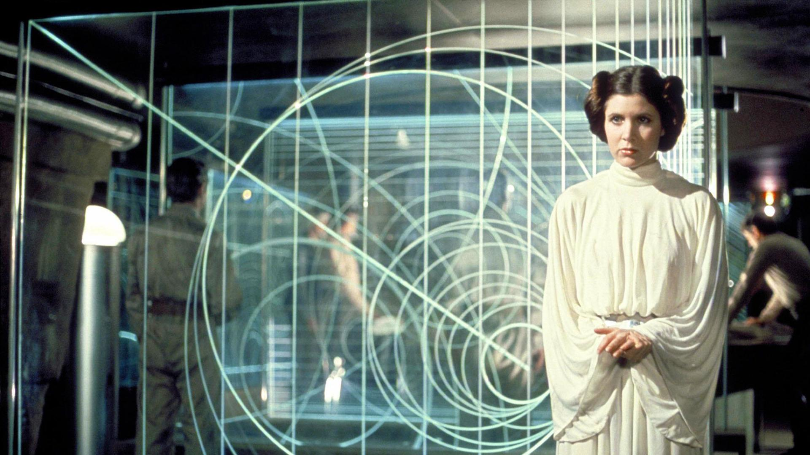
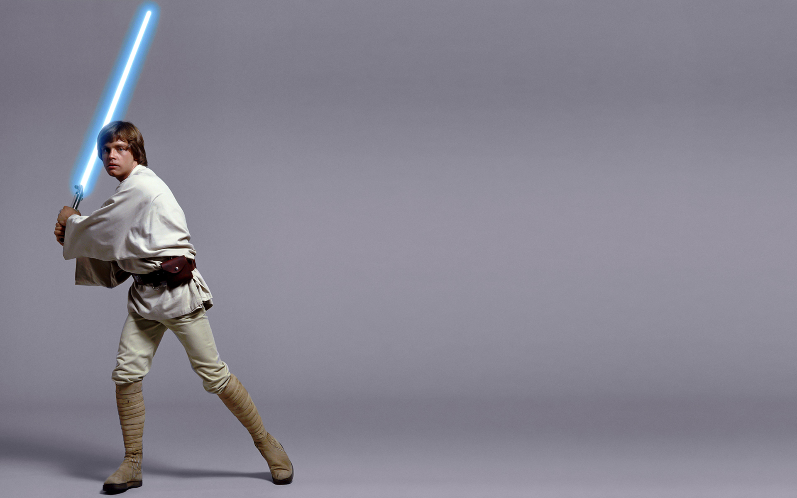
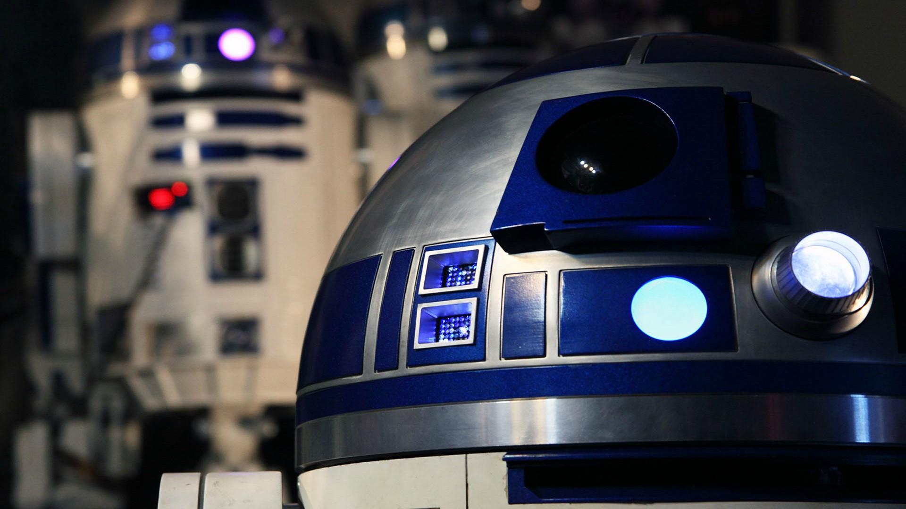
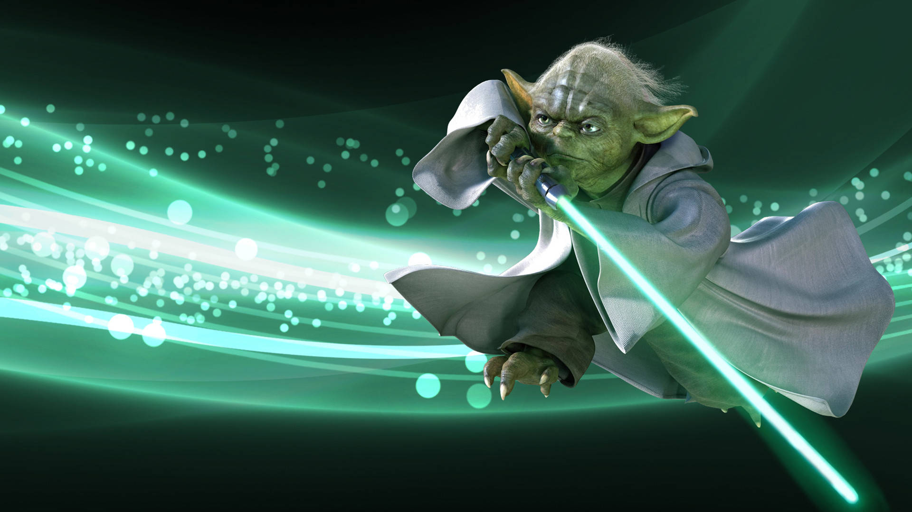
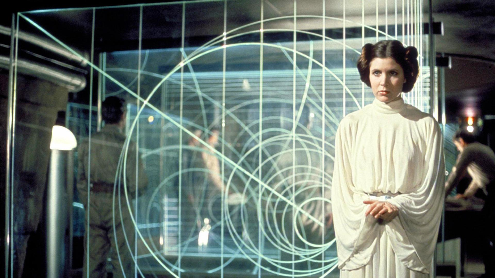
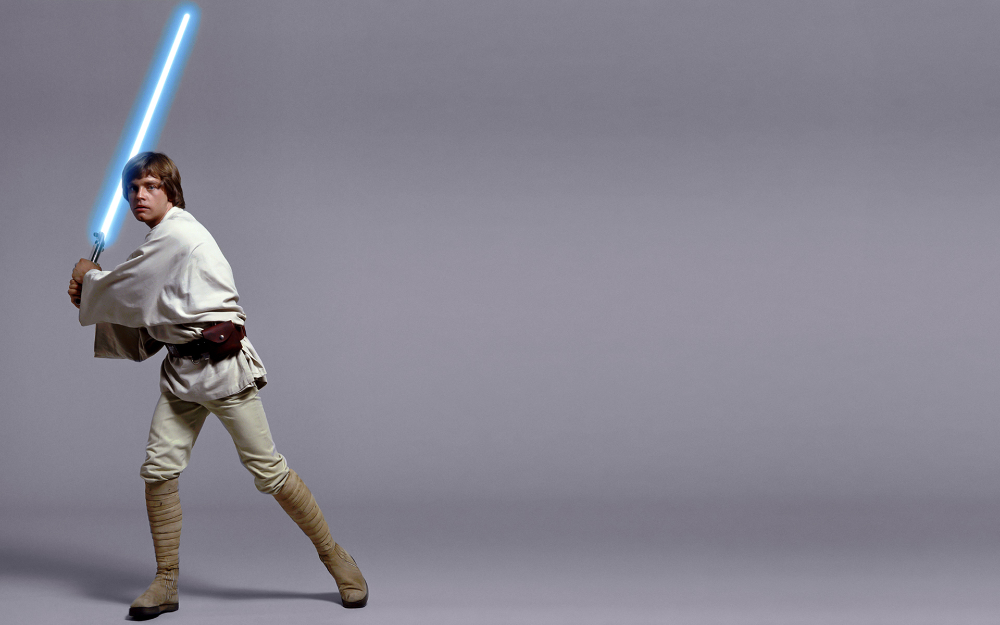
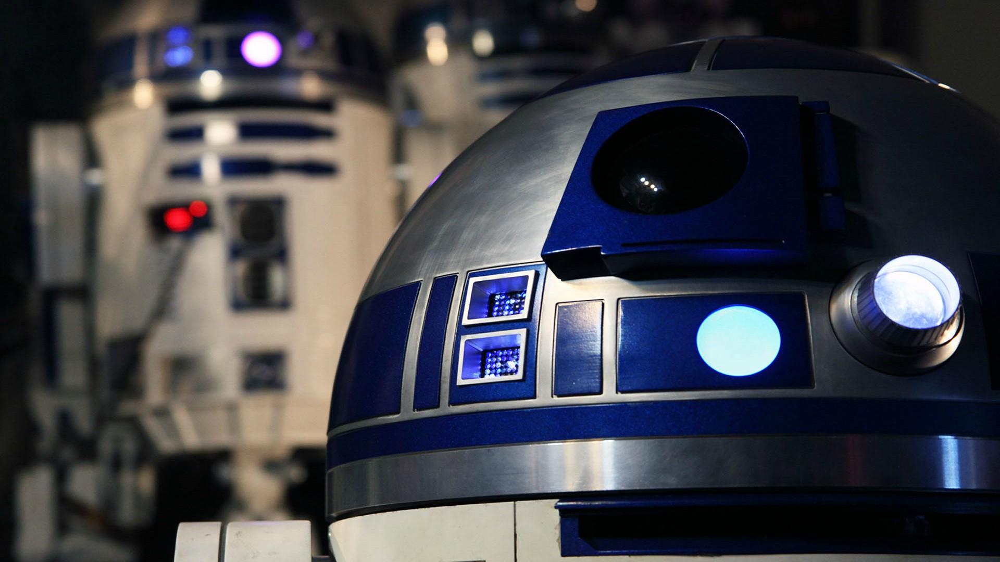
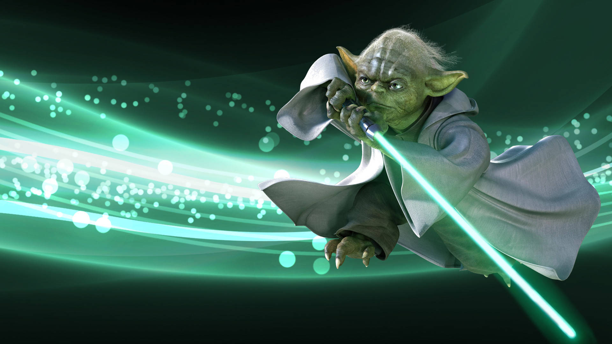

Darth Vader
Darth Vader é o temido Lorde Sith, conhecido por sua imponente armadura preta e voz profunda. Antigo Jedi Anakin Skywalker, ele caiu para o lado sombrio e se tornou o braço direito do Imperador Palpatine.
Han Solo
Han Solo é o intrépido contrabandista e piloto do Millennium Falcon, famoso por seu charme irreverente e habilidades de sobrevivência. Com seu jeito despreocupado e astuto, ele começa como um mercenário que só pensa em lucro, mas acaba se tornando um herói inesperado da Aliança Rebelde.
Obi-Wan Kenobi
Obi-Wan Kenobi é o sábio e destemido Jedi mentor, conhecido por sua postura tranquila e habilidades excepcionais com o sabre de luz. Ele treinou Anakin Skywalker e, mais tarde, seu filho Luke, guiando-os com sabedoria e coragem.
Princesa Leia
A Princesa Leia Organa é uma líder corajosa e destemida da Aliança Rebelde. Com seu espírito indomável e habilidades de estratégia, ela combate o Império e defende a liberdade com uma paixão feroz.
Luke Skywalker
Luke Skywalker é o jovem herói, conhecido por sua jornada de um fazendeiro de Tatooine a um poderoso Jedi. Com seu espírito aventureiro e coração corajoso, Luke se destaca por sua determinação em lutar contra o Império e trazer equilíbrio à Força.
R2-D2
R2-D2 é o astromech droid icônico e leal, famoso por suas habilidades tecnológicas e personalidade encantadora. Pequeno em tamanho, mas enorme em coragem, R2-D2 é conhecido por suas incríveis.
Mestre Yoda
Mestre Yoda é o sábio e enigmático Jedi, conhecido por sua sabedoria profunda e habilidades impressionantes com a Força. Pequeno em estatura, mas colossal em conhecimento e poder, Yoda guia e treina os Jedi com seu estilo único.